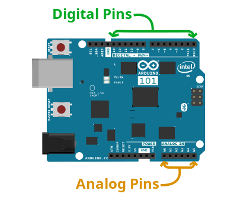
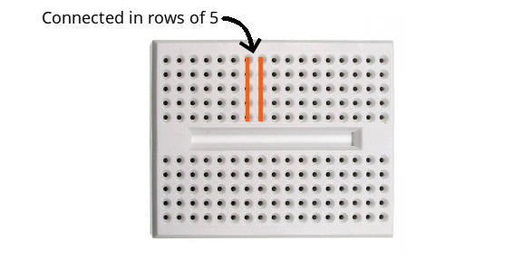
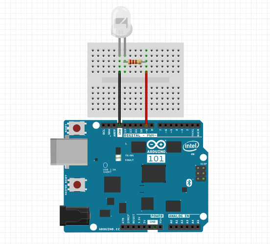
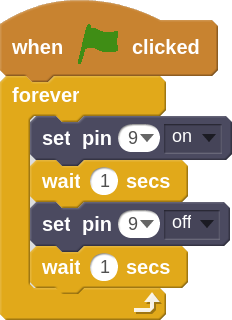
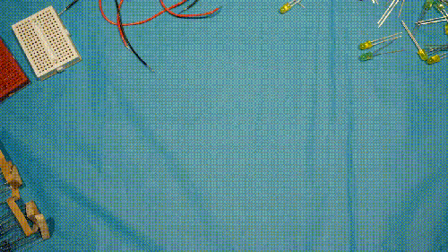

LED Cloud
In this project we will be building our very first electrical circuit! We will be using LEDs to build our own lightning cloud simulation.
In addition to the usual parts, for this project you will need:
Arduino Pins
The Arduino has two different kinds of I/O (Input/Output) pins, digital and analog.
Digital pins are numbered 0 - 13. These pins allow us to turn things on or off (output) or check to see if something is switched on (input), like a button being pressed. If we need to read information from a sensor, like the brightness of a light sensor, we will need to use the analog pins.
Analog pins are numbered A0 - A5. These are used to read values from analog sensors. An analog sensor is one that has many different states. Unlike a button, which can only be on or off, something like a light sensor can provide a range of different values.

Breadboard
A breadboard makes it easy to connect components together. Each row of 5 holes is interconnected. So when you put the leg of a component in the same row it is like connecting them together with wires. See the diagram below which shows how the rows are connected

The circuit
This is the circuit that you will need to build. The color of the wires aren't important. They are only colored so you can keep track of things. Notice the 220ohm resistor between the LED and digital pin #9. This is used to limit the amount of electricity that is flowing through the LED. Without the resistor, the LED would still light up, but the Arduino might get damaged over time.
TIP: If your LED doesn't light up you might have it in backwards. No problem! Just flip it around and try again!

- Build the circuit above and connect the Arduino to a new Arduino 101 project
- We will use the following code to make the LED blink on and off

- Click the green flag and make sure your LED is flashing on and off. If it isn't flashing, go back and look at the circuit diagram above.
- Now cover up the circuit using some fiber fill or pulled apart cotton balls. You can decorate the rest of the cloud with some tissue or construction paper to make it look like part of the sky.

- Now see if you can make the cloud more realistic.
Can you:
- Record sound effects that sound like thunder and play them with the block?
- Change the on off pattern of the LED to make it look more like lightning?
- Advanced: Use the
 to make the lightning happen and random times?
to make the lightning happen and random times?
- Advanced: Wire up more than one LED and flash them at different times?